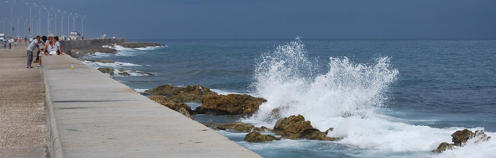
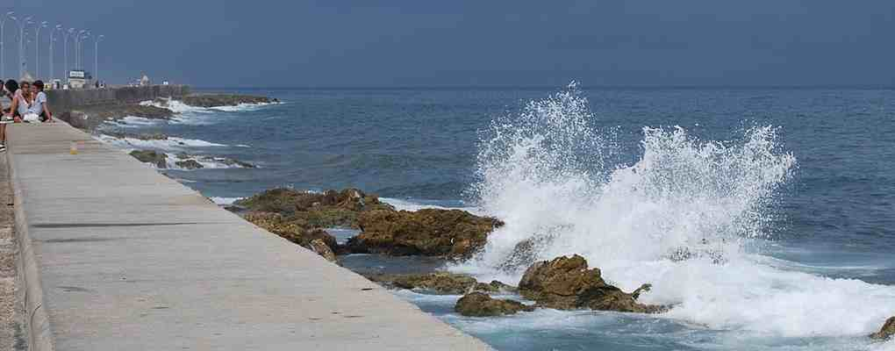

poetry moves
With a very good presence of public literary worth "Poetry in motion" held, on the afternoon of last Friday 8 November in the Sala Rubén Martínez Villena Union of writers and artists of Cuba, in […]
web del festival internacional de poesía de la habana


With a very good presence of public literary worth "Poetry in motion" held, on the afternoon of last Friday 8 November in the Sala Rubén Martínez Villena Union of writers and artists of Cuba, in […]
"Peace with the wind" space organised every month the Municipal Center of the book and literature in the Isla de la Juventud had as a guest last Friday 8 November the Narrator, essayist, periodista y poeta […]
A jury that included the poets Basilia Papastamatíu, Alex Pausides and Ricardo Alberto Pérez awarded the condition of five works presented under pseudonym finalists. The jury awarded mentions notebooks dog that howls, Sergio García Zamora, of […]
"Build together a space for poetry", that transcends the traditional spaces", thus summed up the poet Alex Pausides, Director of the South collection and the Festival of poetry of Havana, el encuentro nacional de coordinadores de este evento […]
Just when the great Cuban poet Fayad Jamís would be 83 years, It will be unveiled Tuesday 12 November to the 6:00 PM, a commemorative tarja or building and 27, where lived much of his life.
Selection of poems of Fayad Jamis…
Poetry is a space of freedom, expression of the best of the human spirit. It stands in a globalized world, as an infinite possibility of twinning the diverse, dignify the beauty and the good conquered by mankind for generations. […]
Entrevista con Silvio Rodríguez, el músico cubano que compuso la banda sonora de una época en América latina, tiene un lugar propio entre los grandes hitos de la cultura contemporánea. En el ambiente político cubano de los 60, siendo él un joven aprendiz de trovador, tenía fama de crítico. Hoy es un hombre maduro que no gusta ya de ofrecer grandes titulares a la prensa.
Convened for three years by the Havana International Festival of poetry of, under the auspices of the Wolsan Foundation of South Korea and the Fundación Asia-iberoamerica de Bogotá, next Friday at the 4 de la tarde se dará […]
Oficialmente nombrado Centro de Formación Literaria, la institución no es una escuelita de narradores, sino un espacio para cultivar el talento, aclara su fundador y director, el escritor y pedagogo Eduardo Heras León… By: Camilo García Lopez-trigo. Saturday, 11 of […]
By: Pedro López Cerviño. Oración, the staging that opens your application project the secret island, It's a captivating proposed from all kinds of perspectives. Lo interesante es que logra sus objetivos artísticos a partir de […]